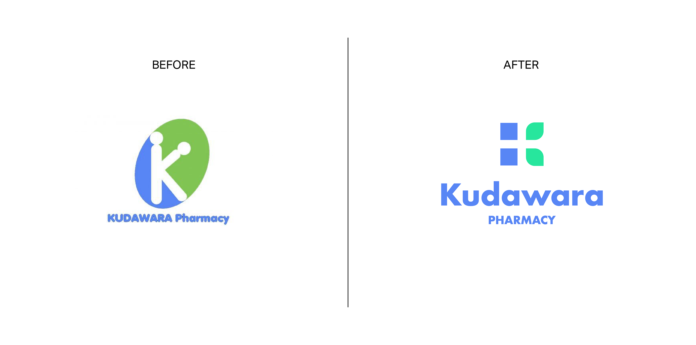
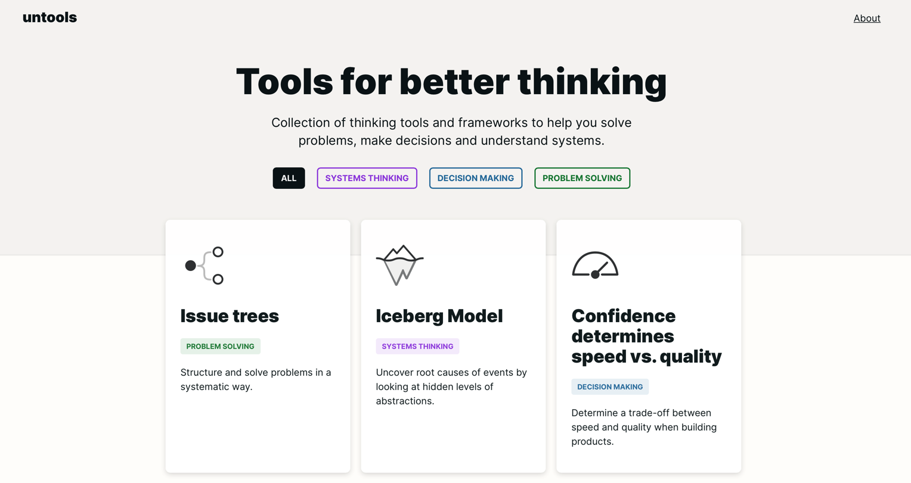
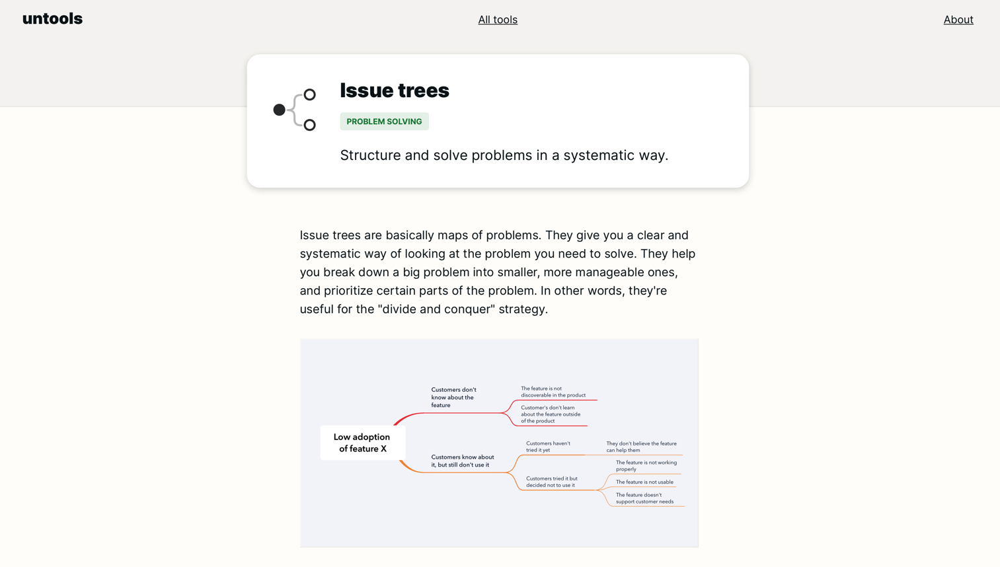
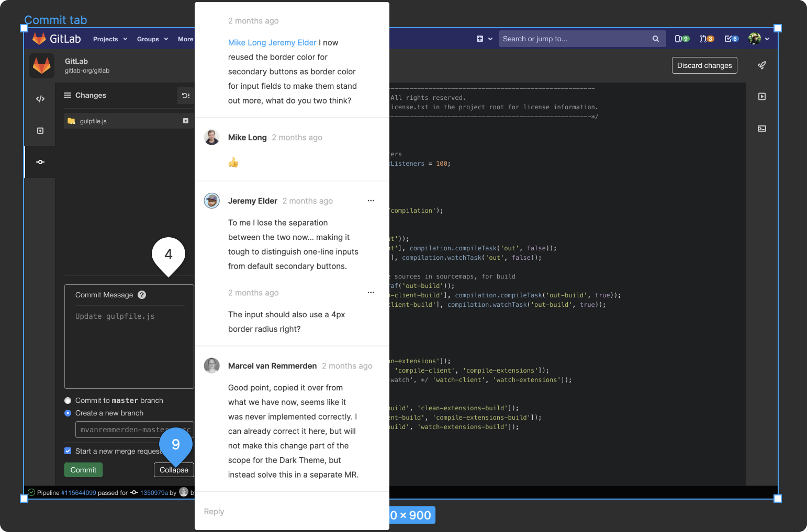
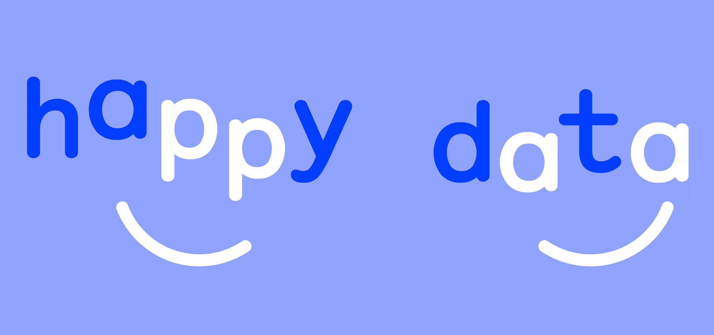
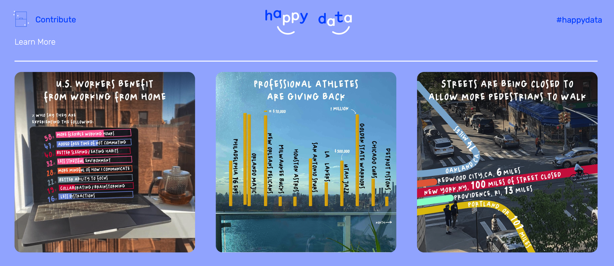

设计周刊 Design Weekly #09
Thu, May 28, 2020
🏷 设计灵感：
重新设计那些最糟糕的 Logo
https://www.behance.net/gallery/95359633/The-worst-logos-ever-Redesigned
设计师 Emanuele Abrate 重新设计了互联网上那些你见过的最糟糕的 Logo。

🏷 设计工具：
精心挑选的思维工具集合，让你更好地思考
那些能帮你解决问题、做决策的工具们都在这里了。


🏷 设计文章
不断丰富的 Web 色彩
https://css-tricks.com/the-expanding-gamut-of-color-on-the-web/
在屏幕色域越来越广的趋势下，CSS的颜色正在扩大，真是个令人兴奋的多彩时代！

🏷 设计新闻
GitLab 的暗黑模式
https://about.gitlab.com/blog/2020/05/20/creating-a-dark-ui-for-gitlabs-web-ide/
GitLab 暗色模式的设计总结。

🏷 随便看看
数据点亮世界
一群友爱的朋友在疫情期间寻找到的有趣数据，希望这些数据能照亮疫情居家中你的日子，帮助你应对这个前所未有的时刻。

